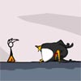
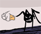

Fancy Pants
 De: La Frikipedia, la enciclopedia extremadamente seria.
De: La Frikipedia, la enciclopedia extremadamente seria.
De la serie grandes personajes:
Ser maligno y transparente
| Nacimiento
|
2000 D.c.n
|
| Muerte
|
No lo creo...
|
| Ocupación
|
Matar arañas
|
| Nacionalidad
|
World 1
|
| Malo o bueno
|
Depende...
|
| Atentados contra la humanidad
|
Matar criaturas no tan inocentes
|
| Religión
|
Norris
|
| Notas
|
¿Como mierda puede ser transparente?
|
Criatura maligna hermano de Sonic, corre tan rapido como él, pero Sonic nunca llegará a ser tan transparente como él. Fancy Pants es un Villano al que le encanta matar animales inocentes, tales como arañas, pinguinos, caracoles y conejos. Ha tenido una historia muy corta, solo ha llegado al World 2, pero aún le falta mucho por recorrer. El es el miedo y el mal personificado en una transparente deidad Maligna.
Características Principales
- Es transparente
- Usa unos pantalones Naranjos
- Es Punk
- Corre mas rapido que Sonic
- Puede andar de cabeza si se le antoja
- Puede abrir puertas sin necesidad de una mano
Su enemistad con Sonic
Sonic queriendo imitar a su hermano mayor.
Fancy Pants es hermano mayor de Sonic, y este siempre lo ha admirado, pero Fancy, al ser maligno, lo despreciaba y siempre le hacia morder el polvo al correr. Sonic, con el paso del tiempo, fue reteniendo su odio y ahora se han vuelto su peor enemigo. Ahora, cada vez que se encuentran, echan una carrera para ver quién será el mejor, pero Fancy siempre resulta ganador (A menos que Chuck Norris participe).
Enemigos de Fancy Pants
 Una de sus victimas despues de encararle
- Arañas: Las principales victimas de sus acosos a la sociedad. Van de un lado para otro todo el tiempo y ni siquiera se dan cuenta de que Él se les acerca.
- Caracoles: No son tan frecuentes como las Arañas, pero si Fancy se encuentra con uno de ellos, los mata para usar su concha como pelota de Golf.
- Pinguino Enojado: Fue su primera Gran victima.
Este pedazo de Esta inocente criatura estaba durmiendo, cuando de repente Fancy lo despertó y lo mató segundos después de follárselo.
- Conejo: Su segunda Gran victima. A este estúpido conejo se le ocurrió la brillante idea de robarse el helado de Fancy Pants... Gran error...
 Esa araña fue asesinada segundos despues...
¿Sabías que...?
Fancy al escapar del esposo de su ex
- ...Sus pantalones NUNCA se le caen?
- ...Si esta sobre una plataforma móvil, su pelo se le mueve aunque no haya viento?
- ...1 es mayor que 3?
- ...Fancy Pants se dizfrazó del rey de Hespaña y le dijo "Por qué no te callas" a Chávez?
- ...Fancy Pants respeta a Chuck Norris?
- ...Etc, Etc, Etc?
- ...Más Etc?
- ...Fancy lo hizo consigo mismo?
Enlaces Externos
En esta categoría se encuentran los personajes que aparecen por La Frikipedia:
Autor(es):
- Frikih
- Artanis
- Veni Vidi Vici
- Harry El del Pote
- Rodri968
Frikipedia 2005-2016, Licencia
GFDL 1.2 - Extraído por FrikiLeaks